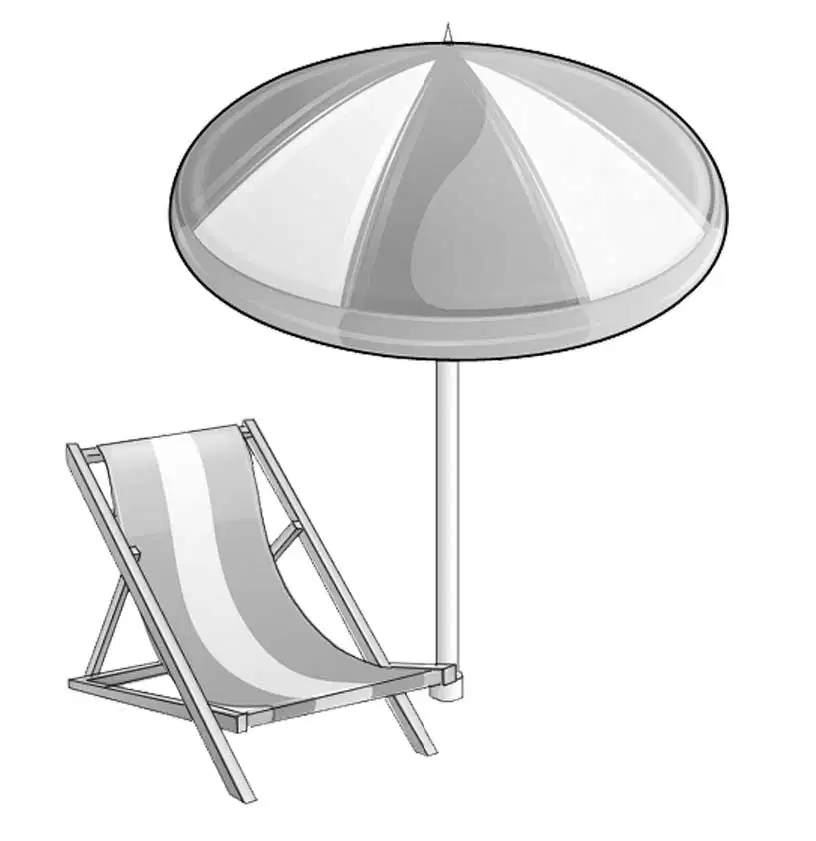

Benny Hunts for Treasure
杰西终于发话了：“洗完碗后，咱们去游泳吧！”
维莉站在沙滩上拿着她的盘子说：“噢，我好像忘不掉李先生了，他看上去好有趣，而且他还说过，每天都会和狗狗经过这里，我们会经常看到他的。亨利，你认为他手里拿的是什么？我看到绑在手杖顶的盒子里有个指示器，上面还有刻度盘。”
班尼灵机一动：“是不是盖革计数器的一种？”
“不是，”亨利肯定地说，“难道你们不记得了？简姑婆农场边的铀矿有个人，专门用盖革计数器寻找铀矿，可海滩上是没有铀矿的——绝对没有，这就可以排除是盖革的可能性。”
班尼说：“那我只有问李先生了。”

奥登兄妹拿着盘子，一起走进房车里。
“我们不去杂货店购物了吗，杰西？”维莉一边问一边烘干勺子。
“不啊，要去的。”杰西回答道，“我看了冰箱和货架，必须得添置一些食物了，比如说牛奶，我们的牛奶差不多快喝完了。”
“反正咱们不能刚吃完饭就去游泳，”班尼提议道，“不如先去买东西，再回来游泳，这里到小镇也就四分之一英里的路程而已。”
“这么早去镇上，应该没什么好玩的。”话虽如此，亨利还是做好了一起去的准备。
奥登兄妹穿上凉鞋，锁好房门，登上亨利停在屋外的蓝色小轿车，出发了。
其实他们用不着开车去的，碧乌镇很小，而且只有一条主街，亨利沿着这条道慢慢开着，首先看见的是一些商店，接下来就是路两旁的房子，其中一栋三层楼的砖房最为高大，其余就是几处零星分布的小平房。
一切似乎都很寻常。就在这时，班尼惊呼起来：“噢，看那房子，快赶上一座城堡了！”
“它好大！”杰西说，“我觉得房子里应该是空的，因为临街的窗户没有挂窗帘，就连塔楼上都没有。”
亨利减慢了车速，说道：“奇怪，谁在这样的小镇建了这样的宅子？一看就是古式建筑。”
班尼猜测道：“肯定是大财主修的呗，看看这些塔楼——一、二、三、四、五……现在谁会买这样的房子啊？”
“这房子看起来好荒凉，”维莉说，“和周围的小新房子风格完全不一样——和任何一座乡间小屋都不一样。”
亨利沿着主街慢慢开了一圈，随即又掉头回来。那座塔楼屋——奥登兄妹都这么称呼它，确实是小镇上独一无二的存在，镇上有图书馆、学校、药店、消防站和市政厅，可就连市政厅的房子也比塔楼屋小得多。
“我很好奇，关于塔楼屋，是不是有什么故事？”班尼一边回头看了看它，一边说，“我想，碧乌镇的居民应该为它制造些传说——换作是我就会这么做，你呢，维莉？”
“是啊，我也会。”维莉笑着赞同道，“比如说，可能有位美丽的公主被囚禁在其中一座塔楼里，直到她长成一位老妇人。”
“不管怎样，我们最好到处打听一下，”班尼说，“我敢肯定，塔楼屋是个神秘的所在。”
“咱们去买东西吧！”杰西建议道。
“我想赶快去游泳。”亨利补充了一句。

在超市里，女孩们买了面包、牛奶、培根、汉堡包、熏肠和一大箱土豆泥，亨利结账的时候，意外地发现，其中居然还有一小盒茶叶和一罐咖啡粉。
杰西解释道：“我想，要是咱们有客人来，提前准备些茶或者咖啡总是好的。”
维莉、班尼和亨利知道，杰西所谓的客人，就是那位老绅士李先生，但是他们都没有挑明。
亨利开车回到海滩，大家迅速将买来的东西收拾妥当。
奥登兄妹再次踏上沙滩时，海滩上已经聚集了不少游客，他们穿着五颜六色的游泳衣，或尽情地在水里嬉戏，或在海滩上享受着日光浴，小孩子们则兴奋地喧闹着。
奥登兄妹加入了游泳的人群，在凉爽的海水里度过了早上的剩余时光。
当天晚上，班尼原本想步行去碧乌镇的，他在想，那有着五个塔楼的塔楼屋里会有灯光吗？或许，他只是太期待有神秘事件发生了吧！
第二天一大早，班尼就发现有人已经搁了把椅子在海滩上，当他看到托盘里放着茶杯、装有面包和黄油的盘子和茶壶后，不禁笑了，这意味着，李先生已经被看作他们这个海滩之家的一员了。
奥登兄妹翘首期盼着，结果并没让大家失望，他们在沙滩上刚吃完早餐，就看到李先生和他的狗狗出现在海滩上。杰西赶紧跑进厨房，一边烧开水，一边寻思待会儿李先生究竟是要喝茶还是咖啡。

老绅士走到奥登兄妹身边时，一眼便看到了那把椅子，不禁笑了：“这是专门为我准备的吗？”他坐了下来，微笑地注视着孩子们。
“没错！”班尼说，“我想您已经用过早餐了吧？”
“是啊，很早就吃过了。”李先生回答道，“只是昨晚睡得不太好。”
杰西站在门口问道：“您还能再喝下一杯茶或是咖啡吗？”
“能，当然能！请给我一杯茶，英国人习惯喝热茶。”
杰西留意到“热”这个字眼，于是在沏茶之前，尽量确保小茶壶里的水是热的，随后她便端着托盘走到海滩上。
杰西说道：“我曾经读过这方面的文章，说英国人喜欢在茶里面放牛奶，而不是奶油。”
“正是，年轻的小姐。”李先生说道，他一边喝着热茶，一边吃光了面包和黄油。

老先生倒第二杯茶的时候，班尼紧紧盯着他，很想问问他关于手杖的事儿，而且说不定李先生也知道塔楼屋的一些秘密，但是班尼拿不定主意先问哪一个好，也不知道怎样问会不那么冒失。
于是班尼说道：“我真不明白，为什么人们会喜欢喝茶，我觉得茶难喝得很……可以告诉我们，您的手杖是一种盖革计数器吗？”
对这个问题，李先生看起来并不惊讶，“不是的，”他回答道，“它是金属探测器，与盖革计数器完全不同，也有人叫它‘探宝仪’——这说法也许比较靠谱。来，让我告诉你们一个秘密——没人知道的秘密。首先你们要知道，每年夏天都有成百上千的游客来到这里，他们中有贫有富，但我不得不说，其中大多数人都是极不小心的……”
“您是指他们不注意水里的安全吗？”维莉问。
李先生笑着回答：“那倒不是，他们挺在意人身安全的！我说的是，那些戴着手表或首饰的人，下水游泳前，通常会把它们随手摘下来，放在沙滩上……”
“我开始明白了。”杰西点了点头。
“我相信你明白了，但你还是没法想象，沙滩里会有多少这样的失物。在发现金属物件时，金属探测器就会发出嗡嗡声，一听到这个，我就知道沙里准埋着东西，于是我的狗狗就立刻开始往下刨，它替我辛苦地忙活着，适当的时候就停下来，当信号声变得足够大时，我就亲手去刨，或者用小工具去挖。”
“您找到了很多东西吗？”维莉问。
“是啊，去年我赚了不少钱呢。当然，每次我都会先问人们，有没有丢过东西。如果是贵重物品，我还会让他们描述一下外观。看那座海滩大平房，我曾经在屋子前找到了一个钻戒，并还给了失主——那是一个年轻可爱的小姐。”
“他们一定很感谢你吧！”杰西说。
“是啊，确实如此，他们有的想给我报酬，但我从来没有要过。不过要是找不到失主，那些失物就归我了。”
班尼问道：“您就是以这个为生的吗？”
“班尼！”亨利打断他的话，“不要这么问，这不关我们的事情。”
李先生笑了：“我不介意告诉班尼，我想，单靠这个也能生存，但我并不想这么做。我只是想找点事情做而已，毕竟我太老，干不了老本行了。”
没人问李先生的老本行是什么，他喝完剩下的茶，说道：“我带了一只手镯给你们看看，这是我上星期刚刚捡到的，上面的沙子已经被洗干净了。”说着，他从口袋里掏出镯子，递给杰西。

杰西评价道：“我对首饰不怎么了解，不过这镯子看起来很不错。”
“它很漂亮。”维莉赞叹道。
“是啊！”李先生点点头，“它应该价值不菲，不过我始终找不到失主。要知道，游客们都来自很远的地方，来了只待几天或一个星期，有的甚至只逗留一天，所以很难找到失主。”
班尼突然间想起安迪叔叔说过的一些话，他向李先生眨眨眼：“您已经尽力，就可以问心无愧。安迪叔叔说这是他爷爷的名言。”
李先生笑了，“谢谢你，班尼，”他说道，“现在你想试试这个探宝仪吗？”
“真的可以吗？”班尼大声说，“我可能会发现一个手表呐！”
“有可能，”李先生赞同道，“但也有可能会一无所获。来，用手杖底在沙滩上划圆圈，慢慢地，慢慢地！”
班尼激动地接过手杖：一场真正的探奇正向他袭来。
李先生让到一边。
“不要兴奋过头了，班尼。”亨利提醒道。
“我一点都不兴奋，”班尼说，“看到我有多冷静了吗？”
手柄处装有一个绿色的小盒子，它貌似仪表，里面的指针颤动着，发出嗡嗡的声音。
大狗狗站了起来，它不明白为什么一个陌生的男孩在用它主人的手杖。
“没事，理查，”李先生对狗狗说，“躺下来吧，这小伙子可用不着你帮忙挖。”
“理查？”亨利笑着重复了好几遍，“狗狗的名字叫理查吗？”
“是的，这是世界上买了最大钻石的人的名字，我为它取这个名儿，是因为我偶尔也会在沙滩里找到钻石首饰。”
班尼慢慢地在沙滩上拖动着探宝仪，大家都注视着他，就连亨利也激动起来，突然，探宝仪开始发出声响，而且声音越来越大。
“你找到宝贝了，亨利，”李先生平静地说，“你想自己动手挖吗？”
“当然！”班尼回答道，“可惜我没有铲子。”
班尼跪下来，开始刨挖起干沙来。维莉悄没声儿地走进房车，拿了个大勺子出来，班尼开心地接过来，这样他就可以挖得更快了。此时，探宝仪的声音变得越来越响了。
“不要期望太大，班尼，”李先生提醒道，“有可能下面只是个废锡罐而已，探宝仪是分不清宝贝和废品的。”
班尼现在铲出去的都是湿沙子，洞变得越来越深了。
李先生说：“要是东西是固体的，就用指头搓一搓，不过别太激动，也许包在里面的不过是含铁的石头罢了。”
班尼闻言就地一坐，他指尖果然多了一样东西。
“哈，总算有点收获，”他说，“有可能是块石头吧！不过我估摸着不像，我觉得要么是枚镍币，要么是块金币，它摸起来又圆又扁。”
班尼抹掉那东西上的沙子，它看起来亮闪闪的，不过那并不是枚硬币——连一分钱都不是。
“不会吧？”班尼丧气地说，“只是个废瓶盖罢了！”
杰西长长地吐了口气，“李先生早就提醒过我们了，班尼，”她安慰道，“不过，想象它是件宝贝的过程其实蛮有趣的。别太灰心！”
“是啊！”李先生说，“反正你已经知道操作方法了。其实没什么收获也是件好事，要是被你轻易找到宝贝了，你就会觉得寻宝易如反掌，其实这事儿需要很大的耐心，到时候你可以再试试。”
“嗯，我知道。”班尼说，“以后我会给这个瓶盖再找个双胞胎兄弟。”
大家都笑了起来。
“好了，咱们明天见吧，”李先生起身说，“再次感谢你们准备的茶点。”
奥登兄妹目送着他和理查走出海滩。
班尼说：“他就像咱家的一员，对吧？”
“尽管我们和他只认识了两天。”杰西补充道。
“不管我们去哪儿，总能碰上有趣的事情！”班尼兴奋地说，“我们肯定有种魔力。”
“能引来奇遇的魔力。”亨利笑着加了一句。
班尼看了看手里沾满沙的勺子，说：“我要去水边洗洗它，在海里洗碗比在厨房里洗有意思多了。”
就这样，哥哥姐姐各自拿起盘子走回了房车，只留班尼一个人在海滩上，他将周围仔细打量了一番，发现李先生和理查早已走远，沙滩上已经杳无人烟。
“可是，”班尼自言自语道，“这些新出现的脚印是怎么回事？昨晚的潮水已经把沙滩上所有痕迹冲洗得一干二净，可这些脚印是从哪里来的呢？”
班尼摇了摇头，肯定是有人来过海滩，而且比李先生起得还早。班尼想知道这些脚印是男人还是女人留下的，于是凑近看了看，结果发现了两种脚印。
“很有趣，”班尼暗想，“这个小脚印应该是小男孩留下的，实在是奇怪啊！”
班尼洗完勺子，站了起来，他决定不告诉亨利和女孩们关于脚印的事情——至少目前不告诉。毕竟，这些脚印可能不是什么大不了的事儿，就像他之前寻宝只找到了废瓶盖一样。
不管怎样，班尼决定，要留意一大早来海滩的所有游客。